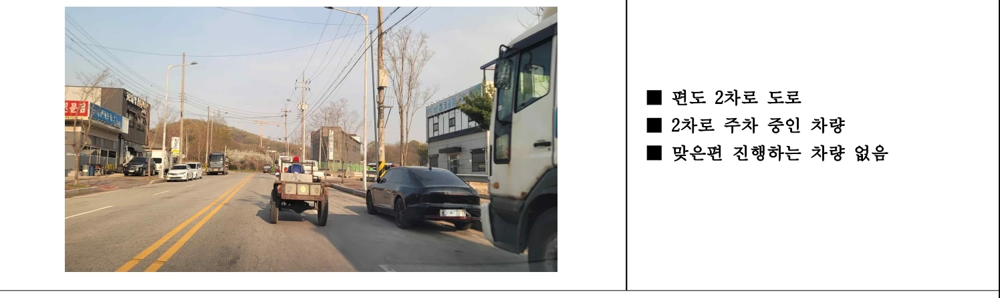

777. Дараах нөхцөлд хамгийн аюулгүй жолоодох арга 2-ыг сонгоно уу.

- ①Мотоблокийг гүйцэж түрүүлэхийн тулд төв шугам давж явж болно.
- ②Мотоблок зогсоолд тавьсан тээврийн хэрэгслийг өнгөрсний дараа баруун талын зайг ашиглан өндөр хурдтай гүйцэж түрүүлнэ.
- ③Мотоблокийн жолооч гараараа түрүүлж явахыг дохисон ч аюулгүйн зай баримтлан аюулгүйгээр араас нь дагана.
- ④Мотоблок 2-р эгнээ рүү шилжин зам тавьж өгвөл төв шугам давахгүйгээр мотоблокийн зүүн талаар явна.
- ⑤Зогсоолд тавьсан тээврийн хэрэгслийн урдаас явган зорчигч гарч ирж болзошгүйг урьдчилан тооцох шаардлагагүй.
Хариулт харах
Зөв хариулт
③ Мотоблокийн жолооч гараараа түрүүлж явахыг дохисон ч аюулгүйн зай баримтлан аюулгүйгээр араас нь дагана.
④ Мотоблок 2-р эгнээ рүү шилжин зам тавьж өгвөл төв шугам давахгүйгээр мотоблокийн зүүн талаар явна.
Үндэслэл
Урд талд нь тариалагч гэх мэт удаан хурдтай хөдөө аж ахуйн машин байгаа бол хурд нь машиныхаас удаан байдаг тул жолоодохын өмнө тариалагчийн нөхцөл байдлыг сайтар шалгаж үзэх хэрэгтэй. Цаг хугацаанаас нь өмнө жолоодох эсвэл гүйцэж түрүүлэхийг оролдох нь аюултай. Тарианы жолооч гар дохиогоор гүйцэж түрүүлэхийг хүссэн ч голын шугамыг давж гүйцэж түрүүлэх ёсгүй. Баруун талын зайгаар гүйцэж түрүүлэх нь гүйцэж түрүүлэх зөв арга биш.
Үндэслэлийн текст нь машин орчуулга.